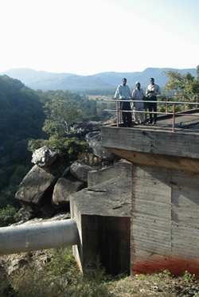

|

The Tinkisso dam, right outside Dabola,
was built by the Chinese in the 1970s to provide electricity
to Sékou Touré's home town, Faranah. It currently
serves Dabola, Faranah, and Dinguiraye (see the map), although it is silted up and only works 6
months out of the year. Left to right: Abdoulaye Bah of Mirinet,
our driver Mamadou Aliou Diallo, and Aboubacar Kourouma of ETI.
|